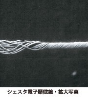
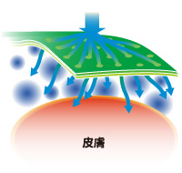
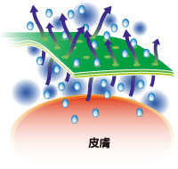
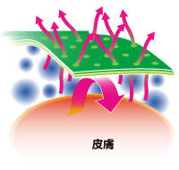

「シエスタ」は特殊意匠ランダム構造フィラメントを使用しており、適度なシャリ感とスパンライクな風合いを表現します。特殊なランダム構造フィラメントにより、ナチュラルでソフトな風合い、通常の清涼素材とは一味違ったタッチ感、優れた吸水性・拡散性・通気性を兼ね備え、快適な着心地を提供します。
独特のしなやかで爽やかなタッチ感と肌にやさしい着用感が得られます。
特殊意匠ランダム構造により、優れた吸水性を備えているため、汗を良く吸い、すばやく拡散・蒸散されます。
通気性が良く、シャリ感が得られます。その効果により快適な着心地を提供します。


外気を適度に拡散して
取り入れます。

速乾性に優れており
快適性を提供。

適度に体温を逃します。
特殊ランダム構造の効果
※加工の条件、使用方法によっては性能に差が生じる場合がありますので、事前確認の上、ご使用ください。
ＫＢセーレン株式会社
生活資材販売部 衣料資材販売部
kbs.info@kb.seiren.com